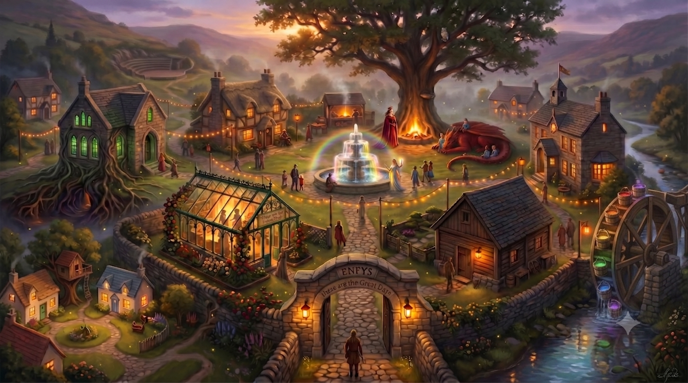

The drawbridge is raised. Held for the people whose work this is.
Enfys is where PowerVox lives and breathes — the village that holds its operating model. "These are the great days" is carved on the gate below. Breathe. Aur. Then come in.

✦ The originSeren WhyThe Heart of the Village WhatThe Library HowThe Gather WhoThe Town Hall WhenThe Village Year You are hereThe Drawbridgeopen the Register Seen from outsideThe Front Door How it’s builtThe Instrument The GardenerThe Greenhouse The SeedbedRoot to Grow The Workshop Barnthe Loop The Town CrierThe Black Egg The White Sofa ⚑Coaching The commercial engineThe MillwheelThe marked places are doors. Gold rings are the five questions; the coloured markers are the wares the village sells, the black egg among them carried by the town crier; the star is the origin. The two pale doors at the threshold are the ways to read the whole village: the Front Door, as a client meets it, and the Instrument, how it is built.
Click a place to enter it